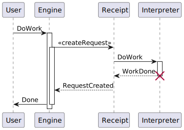
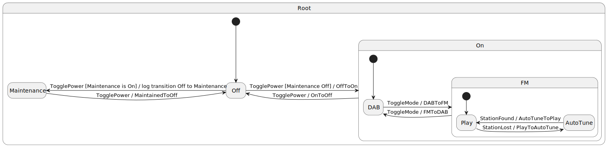
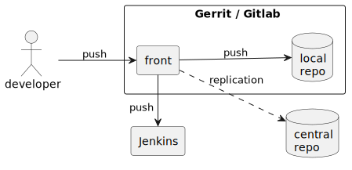
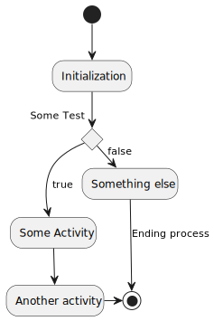

Marcel Baumann (tangly llc)
Object orientation
UML
C4
Object-orientation rules the software world.
The programming languagues C++, Java, C#, Python, Typescript, Ruby, Switft, Rust includes object-orientation features.
An object has three capabilities:
Identity is unique in the system
State is composed of attributes
Behavior is defined with methods
A class is a template for a set objects. It defines the available attributes and their type. It declares the behavior of the objects.
An interface is a behavior template.
An abstract class defines state and behavor. It cannot have instances.
Primitive types have no identity.
Templates are classes with generic types and constants.
Mixins are a kind of interfaces or abstract classes. They codify an orthogonal abstraction.
Designing is an activity
A design represents an artifact representing some findings. This artifact is obsolete when you continue designing.
The model codifies your findings and partially describes the implementation.
Modularity
Cohesion
Separation of concerns
Information hiding
Abstraction
The design is constrained by
The technology stack
The team capabilities
The non-functional requirements
Functions are first-class citizens
Functions can be variables, parameters, and return values
Design patterns such as the visitor, strategy or factory pattern are easily implemented with functions.
UML is the modeling approach for object-orirented systems originating in the eighties
C4 Model is a simplification to the exploding complexity of UML 2.5
Choose the tools empowering you to create the optimal design for your product
Associations shows a dependency between two class
Inheritance extends a class
Realization implements an interface
Dependency uses a class
Aggregation instance has other objects
Composition lifecycle is the same
Properties define the state of an object
Methods define the behavior of an object
A big chunk of the source code is the implementation of methods.
private, package-private, protected, public
static
abstract
derived
{readonly}
Property default value, cardinality, ordered
Association roles
Constraints {…}
Stereotypes
Tags
Notes
Navigability
Class diagrams visualize the object-oriented structure of your source code
Their value is the abstraction to highlight key concepts
Details are available in the source code
defines the structure of the architecture in components
distribution structure such as libraries and executables
source code structure
Provide an overview to highlight your component structure
Beware that modern programming languages support a textual representation of this structure
structure of source code in package and modules. You can show your layered architecture with a package diagram.
physical distribution of artifacts on nodes, cores, and processes
Communication between nodes
A set of concrete instances of classes and their relations
Sequence diagram
Communication diagram

Activation frames
Synchronous and asynchronous calls
Return values
Interaction Frames
Creation and deletion of instances
A state machine is inside a class
Events are asynchronous messages
Avoid activities and concurrent states
Timeout requires a global time provider

Use case diagram
Activity diagram


Heap and Dynamic Object Allocations
Threads
Interrupt Routines
The C4 Model is:
A set of hierarchical abstractions: software systems context, containers, components, and code
A set of hierarchical diagrams: system context, containers, components, and code
Notation and tooling independent
System Landscape Diagram
Dynamic Diagram
Deployment Diagram
Although the example diagrams above are created using a boxes and lines notation, the core diagrams can be illustrated using UML.